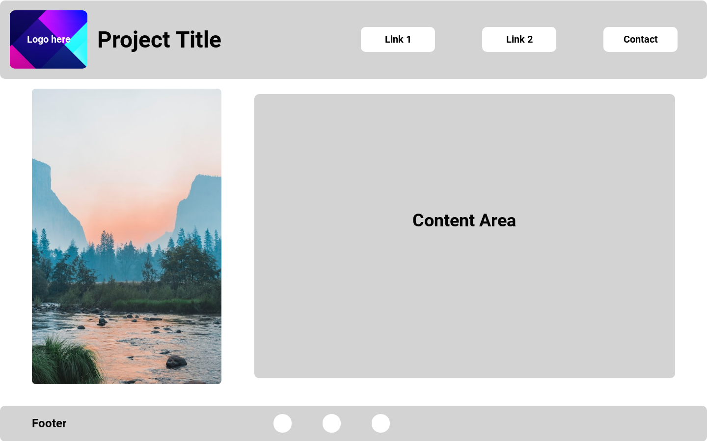

Module 1 Assignment/Blog
Here is a link to my website: click here
Assignment 1:
As this is the first module, I found it a little bit confusing getting
everyhting set up at first. However, once completed, everyhting
started to make better sense.
In regards to programming, I am familiar with several languages, some
such as html, css and js, and others such as java, c#, and python.
Currently, I have a decent understanding of web development, but when
it comes to php, I have no familiarity with that language.
Assignment 2:
So far, the class is going well. There aren't too many things I'm not
familiar with, and I've been working on my css. I'm experimenting with
different color combinations, as well as working with different fonts
and sizes to create some type of textual hierarchy.
I thought I was going to have trouble uploading to the infinity free
website, but uploading the files to the website was easier than other
sites I have used. Overall I would say that I am learning a decent
amount of new things from this class.
Assignment 3:
This week's assignments I found relatively easy. First off, testing
the code, I found that it is correct. However, I did not recognize any
objects being used in the code, but I did see three variables being
used. Two variables stored individual prices, while the final variable
stored the total amount between the other two variables.
When I was doing my assignment, I went ontounsplash.com
and saved an image onto my computer three separate times. One as a
png, another as an gif, and one more as jpg. Upon further inspection
of the code, I found that png has the fastest loading time on my
computer. As for the quality and transparency of the images on
different device sizes, I couldn't make out too much of a difference
from the three different types of images. But over all, I think I am
going to stick with png for my project.
Assignment 4:
This week's assignment I found to be a little interesting as we are
now working with control flow using if/else statements. I find this
particularly exciting as we can now start building on the logic of our
projects, and come up with different solutions or work flows for our
websites.
One thing I found to be a bit challenging is trying to figure out how
to use the if/else statements in my logic. I was tied between whether
if I wanted to use it to verify the age of someone, to checking to see
if there was user input inside of a input field. I eventually ended up
settling on the latter, and created a simple input field that checks
whether if it is empty or not, and display text in accordance to that.
Another thing that happened is we are also working with Adobe
Photoshop. I personally am not the best when it comes to using
Photoshop, however, I do use it to spruce up some of the photos I get
off from the internet from time to time, to better fine tune the
images to what I want them to be.

Assginment 5:
This weeks' assignments I found particularly interesting as we are
starting to work more with forms. I find forms pretty fun yet
confusing, as collecting form data on top of submitting the data can
be a bit tricky to set up. I essentially created a basic form that
asks the user to enter their name, and if there is no text in the
input field, an alert pops up notifying the user. If there is any data
in the input field, the data would be passed through and return
"Hello" + the users' input.
Another thing that's coming up that I look forward to is using php
next week. While I've used php in the past, it isn't necessarily my
strong point, so I will have to brush up on my php skills within the
next week.
php may not be my best language, I do look forward to learning more
about it to better understand web development better.
Another thing we did this week was work with wireframes. I have never
created a wireframe for any of my projects before, and I have to say
that it definitely helped with the visualizationof the website I plan
to build for the semester project.

This is the general wireframe I have configured for the project as of
now. I structured the website in a way that flows on the page that I
think looks nice. I haven't gotten to thinking about what type of
content will go on the homepage yet, however using
uizard, I was really able to get a grasp as to how I wanted the website to
look, and decide what goes where.
Over all, this week has been a pretty exciting week as I am now doing
things that I feel are definitely helpful in creating my final
project.
Assignment 6 & 7:
For this week's assignment, I found it to be a little bit challenging
as we are now working with php. At first, I was a little bit confused
with how to connect html with php, when I realized that I had to save
the entire file as a php file. Once I was able to naviate that error,
I was able to focus more on writing code, rather than connecting php
with html. There were some other things that did give me trouble
though. For one, my liver server extension I have connected to my
vscode was not working, so I had to manually upload the files to the
server. Other than that, working with php wasn't too bad.
While working with strings and functions with php, I found it to be a
bit more convenient than working with javascript. I found that it was
easier to make the data connections as I was calling the function
right there in the code, as opposed to having to connect the function
to html elements. As for the strings, I found that declaring the
variables was a bit odd, as you have to initialize the variables with
a $ in front of the variable name. Other than that, I found php to be
a rather pleasant experience, and I look forward to using php more in
the future.
Assignment 8:
This weeks assignemnt, working with forms in php was very similar to
working with forms in javascript. I found that while the syntax was a
bit different, the logic was the same. Once you were able to make the
connections, and assign the variables to the input fields, it was
relatively simple to do.
As for the question this week, as what is the difference between GET
and POST, the main difference between them is the way data is sent to
the server. $_GET retrieves variables sent in the URL. When a form is
submitted using the GET method, the variables are passed as part of
the URL in the form of key-value pairs, separated by &. The data can
be accessed in PHP using the $_GET array. $_POST retrieves variables
sent in the HTTP request body. When a form is submitted using the POST
method, the variables are sent in the request body and are not visible
in the URL. The data can be accessed in PHP using the $_POST array.
While both methods are used to send data to the server, $_GET is a bit
less secure to use than $_POST, as the data is visible in the URL.
Overall, this weeks assignment hasn't been too bad, and I look forward
to the upcoming assignments.